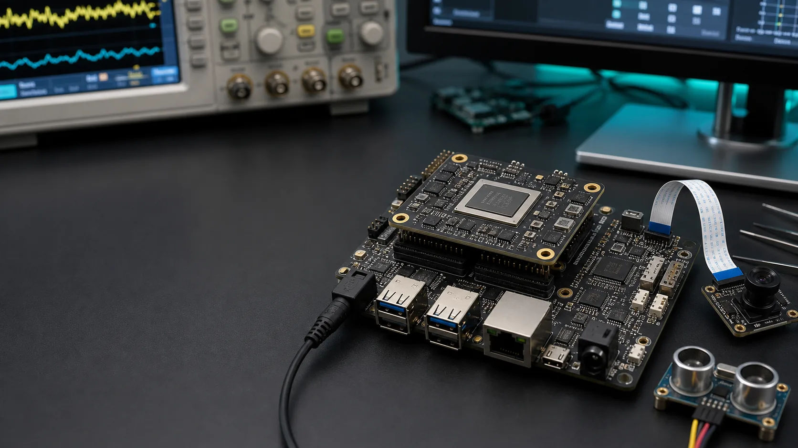

Verilog HDL
모듈, 포트, 조합/순차 논리, FSM, testbench.

교육 및 강의 · FPGA VOD 강의 목차
Verilog HDL, Zynq / Zynq MPSoC, LVDS를 제품 개발 실습, 고객 맞춤형 교육, 고객 보드 Bring-Up으로 제공합니다.

Curriculum
기초 HDL부터 SoC, AXI, LVDS 실습까지 단계별로 구성됩니다.
모듈, 포트, 조합/순차 논리, FSM, testbench.
PS/PL, Vivado, Vitis, boot, GPIO, UART, SPI, I2C.
AXI-Lite, AXI-Stream, DMA, custom IP, register map.
고급 SoC 구조, Linux/RTOS 연동, high-speed data path.
Differential I/O, line capture, timing, 계측 debug.
Package
| 구성 | 대상 | 포함 내용 |
|---|---|---|
| 입문 강의 | FPGA를 처음 시작하는 학습자 | Verilog HDL, testbench, 기본 실습 |
| SoC 강의 | Zynq / Zynq MPSoC 개발자 | PS/PL, Vivado/Vitis, peripheral 제어 |
| 인터페이스 강의 | 센서와 FPGA를 연결하는 팀 | AXI, DMA, LVDS, timing debug |
| 고객 맞춤형 교육 | 제품 개발팀 | 팀 수준과 목표 제품에 맞춘 강의 범위와 실습 자료 |
| 고객 보드 Bring-Up | 신규 보드 검증팀 | power, clock/reset, boot, interface, debug checklist |
Application Areas
Contact
현재 수준, 필요한 주제, 팀 규모, 일정을 알려주시면 교육 구성을 안내합니다.